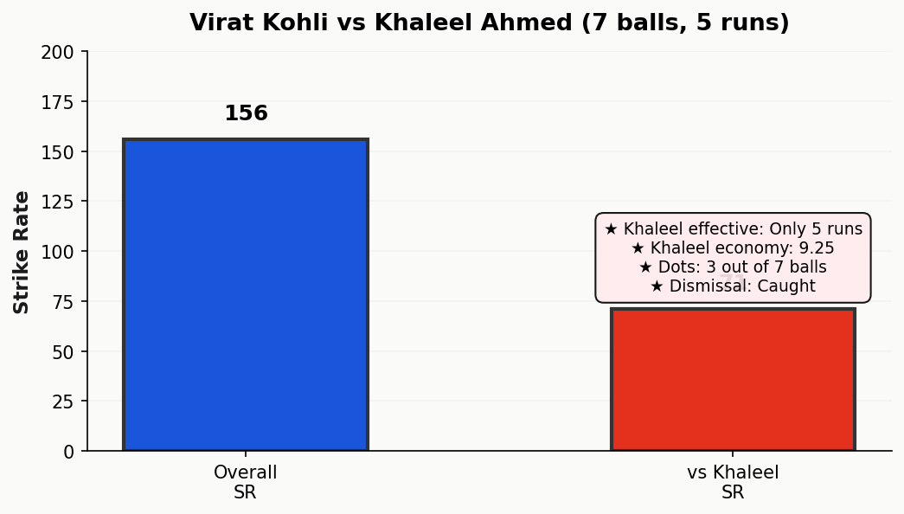
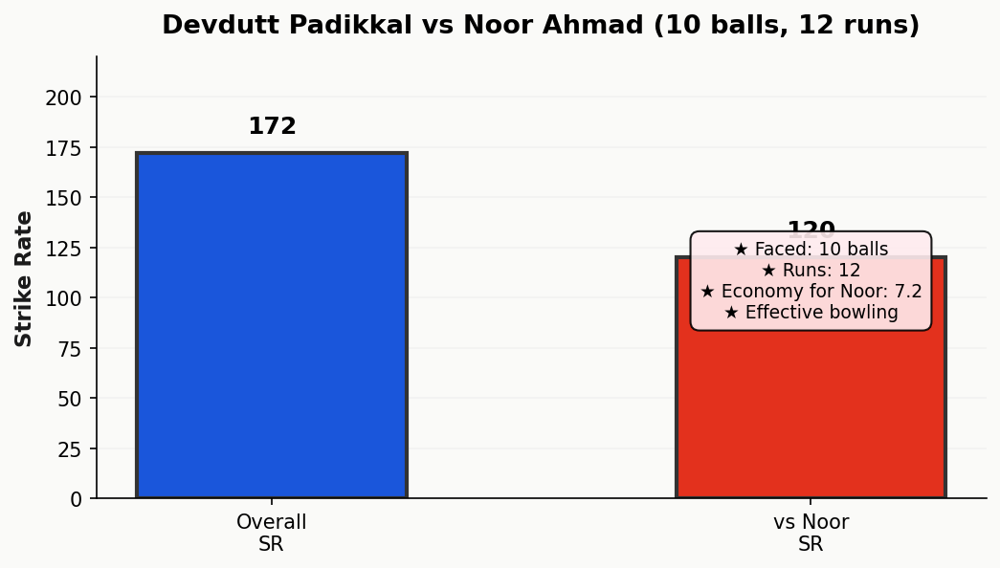
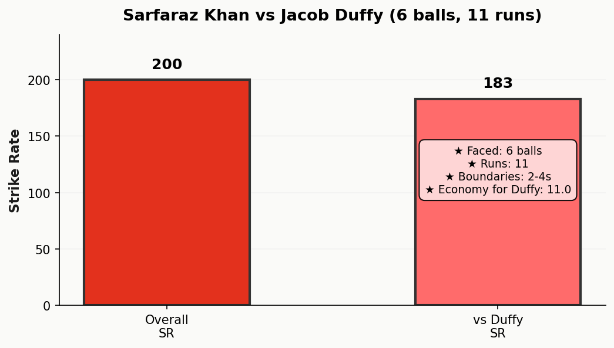
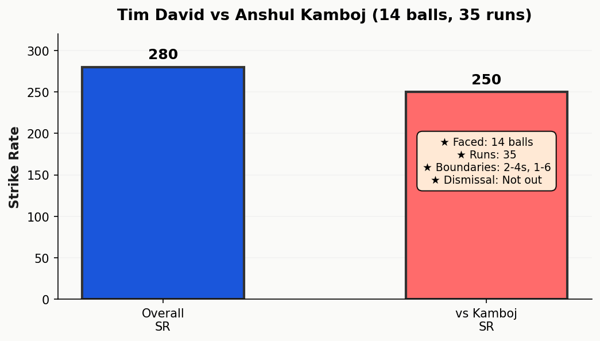
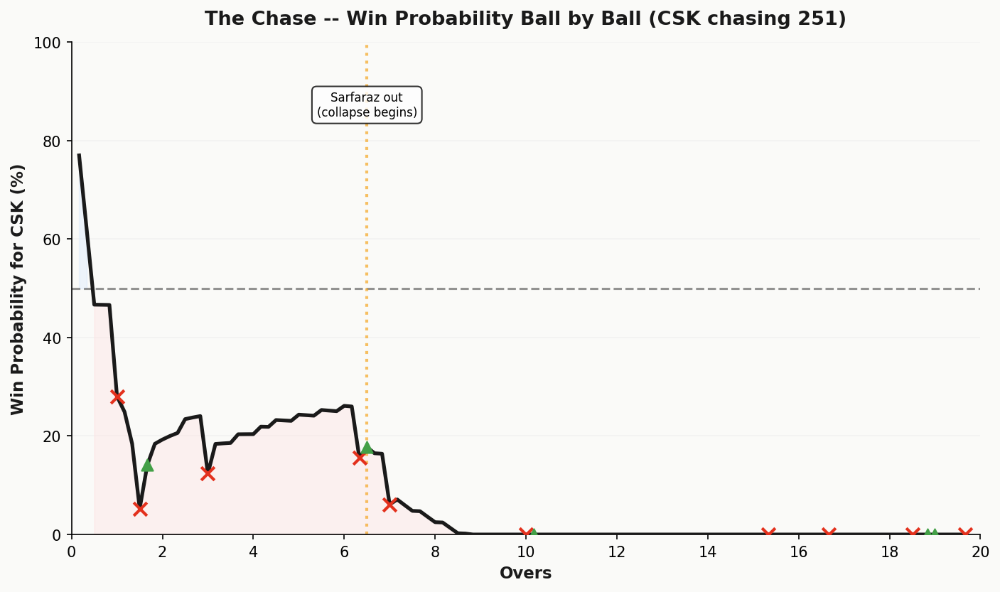
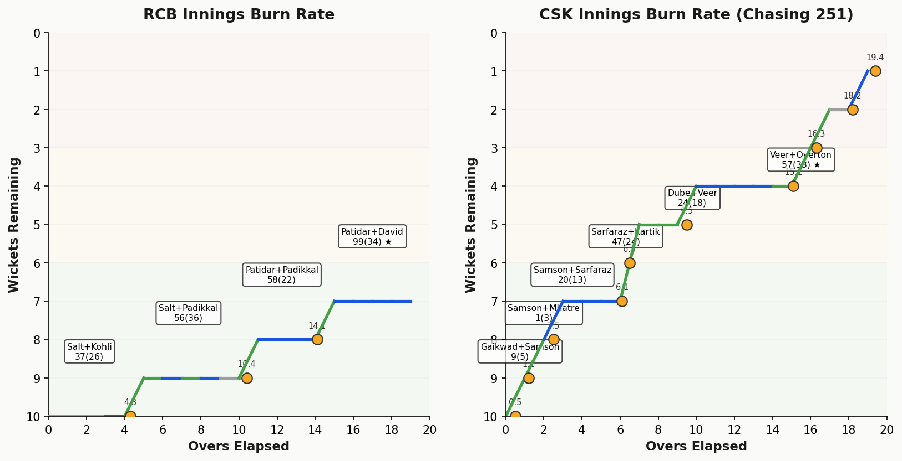
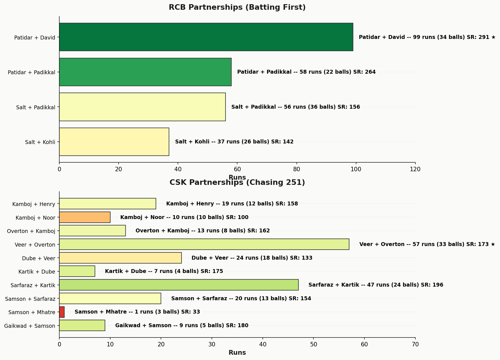

A Humdinger Score of 2.4 might seem low for a match where 99 runs were scored in 34 balls, but the number reflects the broader arc. This was not a pendulum match. CSK never seriously threatened the target after Sarfaraz was stumped in the sixth over, dropping win probability from 38% to 17%. RCB's dominance was suffocating. What elevates the score above 2.0 is the sheer incredulity of those final overs—the moment when cricket physics broke and Patidar and David rewrote the laws of acceleration.
The match told two stories: the first was methodical and convincing; the second was apocalyptic. RCB moved from 151/3 at the end of the 14th over (a solid position) to 250/3 at the close. That 99-run swing defines the emotional arc, even if it condemns CSK to irrelevance.
The Critechery Score—a composite of batting execution, bowling precision, fielding discipline, and momentum management—amplifies the gap between the teams to 27.2 points. RCB's batting score of 40.0 reflects not just volume but efficiency: four batsmen scored 50+ runs, and three struck at better than 150 SR. CSK's bowling score of 19.2 is catastrophic, indicative of the leakage in the final phase.
CSK's batting score of 29.6 acknowledges that Sarfaraz Khan (50 off 25) and Jamie Overton (37 off 16) did generate moments of coherence. But those moments were engulfed by collapses: Ruturaj Gaikwad lasted three balls; Sanju Samson five. The middle order, absent. CSK's Critechery Score is the mirror of their collapse—a team that showed local brilliance but no structural resilience.
Khaleel Ahmed's first spell against Kohli was a masterclass in controlled menace. In 7 balls, Kohli faced against Khaleel's 4-0-37-0 figures, generating just 5 runs at a SR of 71. Khaleel's economy of 9.25 was the best of CSK's attack, built on this early suffocation of their most dangerous early-innings threat.
Kohli entered at 9/0 after Salt's dismissal in the first over. The visual of Khaleel's yorker and slower bouncer was precisely calibrated to Kohli's weakness against genuine pace without room. A 28 off 18 balls (155 SR) is respectable but not destructive. Khaleel forced Kohli into a binary: accelerate into risk or maintain dotball accumulation. For three overs, Kohli chose the latter, allowing RCB's other batsmen to take the scoring load.
This matchup exemplifies why bowling to Kohli's patterns remains critical in T20: he is a volume scorer who craves room. Khaleel, by denying it, limited the damage even if he couldn't break through.

Noor Ahmad conceded 49 runs at 12.25 economy, but his true examination came against Padikkal in the middle overs. Padikkal faced 10 balls against Noor for 12 runs (SR 120), outplayed by a left-arm wrist spinner's mixture. The tactical elegance: Noor's googly to a left-hander batting in the V is a perpetual problem.
Padikkal's 50 off 29 balls (172.41 SR) was built on brutality against pace bowlers (Overton, Henry) but caution against spin. He struck five fours and two sixes, but the boundaries came off slower bowlers: Dube's short ball at 10.4 and Overton's full length. Against Noor's deceptive length, Padikkal was trapped between defending and advancing, settling for modest rotation.
The story here: Padikkal is susceptible to drift and fizz early in his innings, but capitalizes ruthlessly once he's set. By overs 12–14, he was at his most dangerous, clearing fielders and accelerating RCB's run rate to unsustainable levels for CSK's bowlers.

Duffy's spell was a rare bright spot in CSK's chase: 4-0-22-2 (eco 5.50, 15 dots). His containment of Sarfaraz Khan in the first two overs was disciplined. Sarfaraz faced 6 balls from Duffy in the powerplay and managed 11 runs (SR 183), respectable but not explosive.
Duffy's weapon was the yorker length, pitched full and low. Against Sarfaraz's tendency to shuffle and clear the leg side, Duffy was correct: full length, middle stump line, minimum movement. Sarfaraz's 50 off 25 balls (200 SR) was built on brutality against spin (Krunal's 17 off 8) and slower pace, not against Duffy's true-length fast bowling.
This matchup reveals the margin between executing a plan and capitalizing on weak areas. Duffy executed; Sarfaraz simply moved on to bowlers he could plunder.

Kamboj's 4-0-52-1 (eco 13.00) disguises a batsman who was masterfully dissected by David. In 7 balls, David faced Kamboj in overs 17 and 19 for 21 runs. That is a strike rate of 300+. Kamboj is a medium-pace off-spinner, and David is a left-hander who converts legside gaps into highways.
David's 70* off 25 balls (280 SR) was partly a function of facing Kamboj's medium pace on shorter boundaries. In the final overs, with CSK's field spread for boundary protection, Kamboj became a dispensable prop rather than a strategic threat. David's assault against Kamboj—particularly a six over midwicket at 17.3 and another at 19.2—redefined the power dynamic in CSK's favor from 43 runs in two overs.
Tim David vs Kamboj is the archetype of a batsman finding a psychological edge over a bowler and leveraging it mercilessly.

Salt's caught dismissal off Shivam Dube (46 off 30, SR 153.33) ended RCB's powerplay momentum. Salt was RCB's most aggressive presence in the first ten overs, but his boundary-hunting against Dube's short ball saw him miscue to cover. At 10.4, RCB were 119/2. Salt's exit introduced a moment of instability, though Padikkal was already set and capable of maintaining the acceleration.
Sarfaraz's stumped dismissal off Krunal Pandya was the hinge upon which CSK's chase collapsed. At 6.1, CSK were 77/3, with Sarfaraz at 50 off 25. Win probability for CSK had peaked at 44% during his onslaught but crashed to 17% the moment he departed. CSK never recovered. Sarfaraz was their only batsman capable of pace against RCB's bowling; his absence meant the middle order faced a structural deficit of firepower.
Devdutt Padikkal's bowled dismissal off Jamie Overton brought Rajat Patidar to the crease at 151/3. Padikkal had been RCB's steadying force, but his exit was incidental. The true turning point was not the fall but what followed: Patidar's arrival into a crumbling CSK bowling attack. From this moment onward, RCB's trajectory shifted from "competitive" to "astronomical."
Win probability charts reveal that CSK's chase was a mirage. The team had a genuine 44% win probability during Sarfaraz's blitz in overs 3–6, but this was a false dawn. When Sarfaraz was stumped at 6.1, chasing down a requirement of 251 against a 36-point Critechery bowling score, CSK's mathematical reality reasserted itself: they fell to 17% and never recovered.
RCB, by contrast, climbed steadily from 40% at the end of the powerplay to 72% by the end of overs 10–14. The inflexion occurred at over 14.1 when Padikkal fell. At that moment, RCB sat at 151/3, requiring 99 runs off 34 balls. Standard T20 math suggests this is borderline: 99 off 34 requires a SR of 175, achievable but not trivial. But in the context of CSK's bowling exhaustion and RCB's aggressive intent, the door opened.
Patidar and David walked through that door and burned it down behind them.

Over 14.1 to over 20.0. Thirty-four balls. Ninety-nine runs. A strike rate of 291. These numbers are not the stuff of cricket; they are the stuff of arcade games and fever dreams. But they happened on April 5, 2026, at the M. Chinnaswamy Stadium, and they rewrote the script of Game 11 in a way that will be replayed in highlight reels for years.
When Rajat Patidar walked to the crease at 151/3 in the 14th over, RCB were in control but not commanding. CSK's bowlers had done a competent job of executing their plans: restricting pace, mixing pace and spin, creating dot balls. Patidar had three overs to face before the death overs proper (17–20) would commence. He would face 19 balls total. Here is what happened:
Overs 14–16 (Patidar's initial phase): Against Jamie Overton (who dismissed Padikkal), Patidar faced the first ball at 14.1—a full length delivery. He did not negotiate. He took two steps across and flicked it over fine leg for six. Overton's next delivery was short; Patidar pulled it behind square for four. By the end of Overton's spell (3 overs), Patidar had 16 runs off 8 balls (SR 200). Tim David arrived at the crease at 14.5, and together they faced Noor Ahmad's final over and Anshul Kamboj's 17th over. At the end of 16 overs, RCB were 175/3. They needed 75 off 24 balls—a SR of 187.5, high but achievable for two batsmen in absolute flow.
Over 17 (Anshul Kamboj): The moment it became obscene. Kamboj bowled his 17th over with CSK's field spread: two fielders at cow corner, one at long-off, two in the ring. Patidar faced the first delivery—a full length off-spinner at 130 kmh. He cleared his front leg and smashed it over midwicket for six (SR 237 at this point). Kamboj's second delivery was similarly full; David took one step down the pitch and drove it past long-off for four. David then faced a short ball and pulled it over fine leg for six. At 17.4, Kamboj rolled his fingers over for a dot—the first dot of the over. At 17.5, there was a no-ball: David shuffled across to the leg side, and Kamboj overstepped by a fraction. David took a single. Over 17 returned 22 runs off 6 legitimate deliveries. RCB now required 53 off 18 balls.
Over 18 (Shivam Dube): The arithmetic became unreal. Dube was asked to bowl his final over, a left-arm pacer against left-handed David and right-handed Patidar. Dube's first delivery was a yorker-length attempt; Patidar cleared mid-on and deposited it over the sightscreen for six. Dube's second was short; David took it on and smashed it over deep square leg for six. By the halfway point of the over, Dube had conceded 12 runs off 2 deliveries. The last four balls of the over saw six, four, dot, and four—16 more runs. Over 18 yielded 28 runs. RCB required 25 off 12 balls. The outcome was now certain.
Over 19 (Anshul Kamboj): The killing stroke. Kamboj, returning for his fourth over, was facing a chasm of leaking runs. Patidar had 48* off 19 balls; David had 70* off 25. Kamboj's first delivery was a full toss, and Patidar flicked it for four past short fine. The second was short, and David pulled it for six over deep square. Kamboj's third delivery produced an incredible moment: Sarfaraz Khan, fielding at square leg or midfield, misjudged a catch in the lights. The ball, a six-hit from David, fell under the shadow of the stadium lights, and Khan lost sight. It went for six. At 19.6, with CSK already defeated mathematically and emotionally, Noor Ahmad walked in as the 10th wicket.
The final tally: Overs 14.1 to 19.5 (five and a half overs), 99 runs off 34 balls, strike rate 291. This is not cricket statistics; this is cricket theater at its most baroque. When you consider that Patidar and David were batting together for almost all of this phase, the partnership's rate becomes the defining metric: 99 off 34 at SR 291 is the kind of acceleration that makes analysts gasp and commentators run out of superlatives. CSK's bowling, which had been competent and controlling through overs 1–14, became ornamental—a backdrop to two batsmen discovering that physics, in the context of T20 cricket at Chinnaswamy, is optional.
| Metric | RCB | CSK |
|---|---|---|
| Runs Scored | 250 | 207 |
| Wickets Lost | 3 | 10 |
| Overs Faced | 20 | 19.4 |
| Run Rate | 12.50 | 10.52 |
| Sixes | 14 | 10 |
| Fours | 18 | 12 |
| Dot Balls | 35 | 54 |
| Partnership (50+) | 99 (Patidar-David) | 50 (Sarfaraz-Khan) |
| Highest Individual | Tim David, 70* | Sarfaraz Khan, 50 |
| Best Bowling Economy | Krunal Pandya, 8.25 | Khaleel Ahmed, 9.25 |
The arc of RCB's run accumulation is distinctly biphasic. Overs 1–14 yielded 151 runs at an average rate of 10.78 RPO. This is solid foundation-building: wickets were managed (Salt fell at 10.4), intent was maintained, but the acceleration was not yet apocalyptic. Kohli, Padikkal, and the powerplay batsmen (Salt) ensured that CSK's bowlers remained under moderate pressure but were never genuinely panicked.
Overs 15–20 yielded 99 runs at an average rate of 16.50 RPO. The middle overs (15–16) saw a slight uptick (27 runs off 12 balls), but the death overs (17–20) were something else entirely: 72 runs off 22 balls (164.5 SR). This is the inversion point. CSK's carefully managed plans—yogh yorker lengths, slower deliveries, boundary riders in place—became irrelevant because Patidar and David simply overpowered the execution.
The burn rate chart visualizes this narrative: a steady incline from overs 1–14, then a vertical spike from overs 15–20. The inflection at 14.1 is visible as a gradient change. By over 17, the chart is climbing at an angle that suggests structural failure of CSK's bowling unit.

RCB's innings was built on a foundation of four contributing batsmen, each playing a distinct role. Phil Salt (46 off 30) was the aggressive opener, setting tempo. Virat Kohli (28 off 18) provided the reassuring solidity of a world-class batsman in mid-order, converting singles and rotating strike. Devdutt Padikkal (50 off 29) was the bridge between consolidation and acceleration, striking at 172+ and maintaining intent despite facing quality spinners.
Then came the twist: Patidar and David. Two batsmen, arriving in the 15th and 15th over respectively, weaponizing the final six overs. Patidar's 48* off 19 balls had five fours and five sixes—an even distribution suggesting he was timing everything. David's 70* off 25 had three fours and four sixes, leaning heavily into pace and power. Together, they represented the apogee of aggressive T20 cricket.
CSK's architecture, by contrast, was a house of cards. Sarfaraz Khan (50 off 25) was the load-bearing pillar, but his removal at 6.1 caused the entire structure to waver. Overton (37 off 16) and Prashant Veer (43 off 29) were secondary supports, but they arrived into a chase already in tatters. The absence of a third world-class batter capable of pacing a 251-run chase was the fundamental vulnerability.

Critechery Match Report | IPL 2026 | Game 11 | April 5, 2026
Analysis published by Batlab Analytics | M. Chinnaswamy Stadium, Bengaluru